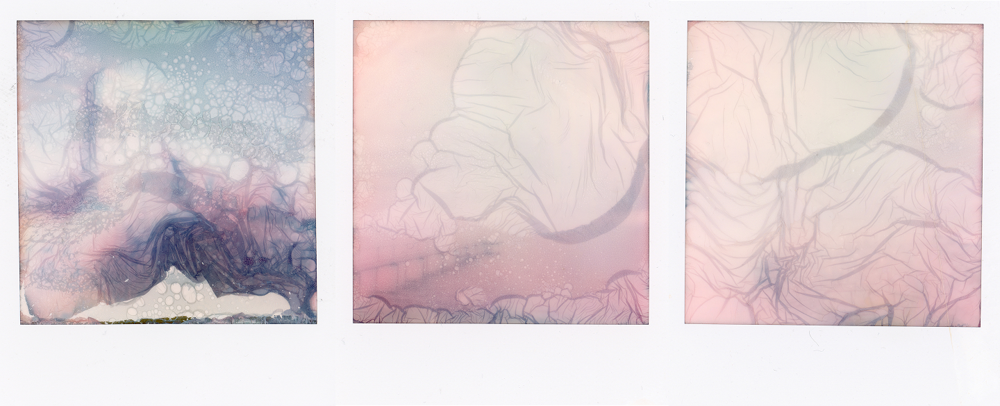
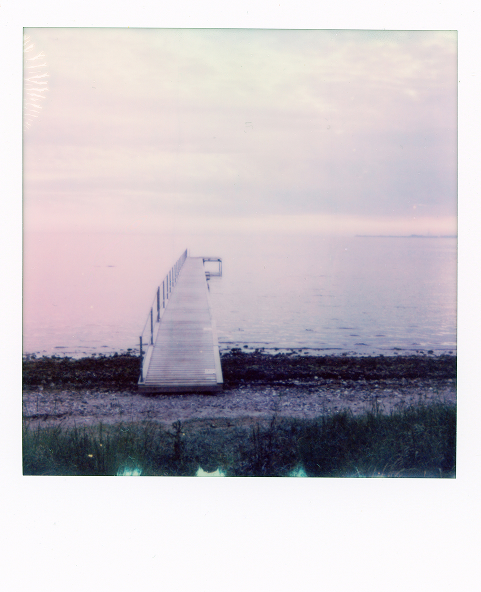
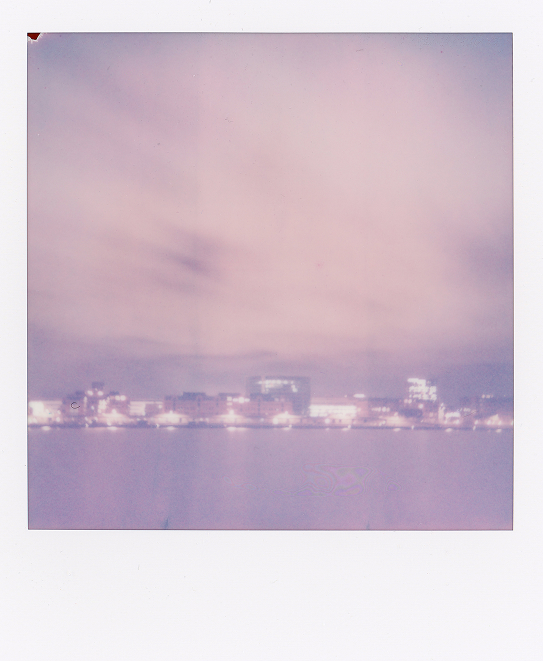
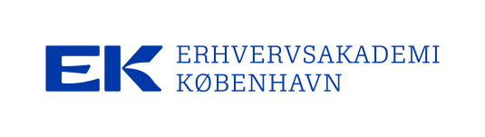
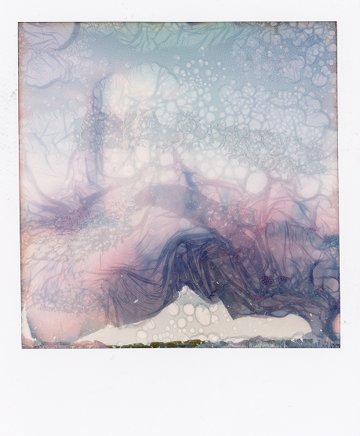

INFORMATION
INSTANT UGEN
HVEM ER VI?
Instant Ugen er et lille projekt, der drives af et par undervisere fra Multimediedesignuddannelsen på EK - Erhvervsakademi København. Instant Ugen er et halvårligt projekt, hvor undervisere og studerende samarbejder om et digitalt design- og kommunikationsprojekt relateret til Instant Ugen-konkurrencen.

DOMMERNE
Jonas Hasle (Adjunkt, Multimediedesign på EK)
Anders Dollerup (Lektor, Multimediedesign på EK)
Birgitte Heide (Lektor, Multimediedesign på EK)
Stefan Grage (Lektor, Multimediedesign på EK)
Studerende på Digital Design Valgfaget på EK

SPONSORER
Instant Ugen er ikke relateret til nogen virksomheder inden for Instant foto-branchen. Den eneste organisation, der støtter os, er EK - Erhvervsakademi København.

